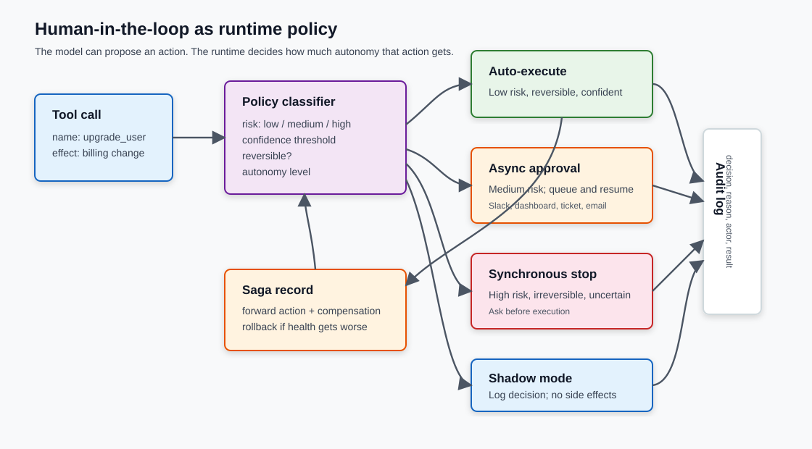

Human-in-the-Loop Is an Architecture, Not a Checkbox
Part 6 of the Engineering the Agentic Stack series
The previous post covered the runtime around long-running agents: sessions, sandboxes, checkpoints, traces, and recovery. This one covers the control layer that sits on top of that runtime. A model can propose an action. The runtime still has to decide how much autonomy that action gets.
Most bad human-in-the-loop designs start as a single approval checkbox. The agent runs, produces a plan, and waits for someone to say yes. That works for a demo. It collapses in production because the interesting question is not "should a human approve the agent?" It is "which specific action needs which kind of human involvement, at this point in the run, with this level of risk?"
TL;DR: Human-in-the-loop is not one approval button. Treat it as runtime policy. Classify every tool call by risk, confidence, reversibility, and blast radius; map the result to an autonomy level; then route it to auto-execution, async approval, synchronous approval, shadow mode, or rollback. Capability says what the agent can do. Autonomy says what it is allowed to do without you.
I built a small companion demo for this post at work/demo/2026-06-06-agent-autonomy-hitl/. From that directory, run:
uv run demo.py
It uses only the Python standard library and exits with assertions if the policy lets the wrong action through.
The approval checkbox failure mode
The checkbox version of HITL sounds responsible: "require approval before the agent acts." It also throws away most of the information the runtime already has.
An agent action carries more information than the verb in the tool call. It has a tool name, arguments, a confidence estimate, a side effect, a reversibility profile, an audit trail, a user, a budget, and a deadline. Sending a Slack summary is different from deleting a customer record. Reading a repository is different from pushing to main. Updating a draft invoice is different from charging a card.
The runtime should make those distinctions before a human is asked to look at anything.
Modern frameworks already expose the right shape. LangGraph's human-in-the-loop docs treat HITL as graph interruption and resume. OpenAI's Agents SDK guide describes tool approval behavior that interrupts execution before selected tools run. Google ADK's long-running function tools use a similar pause-and-resume pattern when a function needs human input.
The common idea is simple: the approval gate belongs inside the execution path, not outside it.

Autonomy is separate from capability
The most useful distinction I found comes from the Knight First Amendment Institute at Columbia. In "Why AI Agents Need Autonomy Evaluations", the authors separate what an agent can do from how independently it is allowed to do it.
That separation matters in ordinary engineering work. Your deployment agent may be capable of changing Kubernetes manifests, opening a pull request, and rolling a service. That does not mean all three actions should run under the same autonomy policy.
I use five levels:
| Level | Human role | Runtime behavior |
|---|---|---|
| Operator | Person drives every action | The agent waits for explicit instruction before each side effect. |
| Collaborator | Person and agent work together | Low-risk actions can run; uncertain or medium-risk actions ask synchronously. |
| Consultant | Agent recommends decisions | The agent prepares options and asks the person to choose. |
| Approver | Agent proposes, person approves exceptions | Low-risk work runs; medium-risk work enters an approval queue. |
| Observer | Agent runs and reports | Only high-risk, irreversible, or budget-breaking actions stop the run. |
The level is not a property of the model. It is a property of the task, user, tool, environment, and current trust state.
That last part is easy to miss. A code agent might run in observer mode on a throwaway branch with no secrets, collaborator mode in a production repository, and operator mode when it touches billing infrastructure. Same model. Same tool surface. Different autonomy.
The runtime policy should decide per action
The policy layer needs a small number of inputs. More can be added later, but these four are enough to stop most bad designs:
- Risk: What can this action damage if it is wrong?
- Confidence: How certain is the agent about the action and its arguments?
- Reversibility: Can the system compensate if the action was wrong?
- Blast radius: How many users, dollars, files, or systems can be affected?
Here is the core decision function from the demo in work/demo/2026-06-06-agent-autonomy-hitl/demo.py:
def decide(call: ToolCall, level: AutonomyLevel) -> PolicyDecision:
if level is AutonomyLevel.OPERATOR:
return PolicyDecision("ask_sync", "operator mode requires a person for every action")
if call.risk == "high" or not call.reversible:
return PolicyDecision("ask_sync", "high-risk or irreversible action")
if call.confidence < 0.70:
return PolicyDecision("ask_sync", "agent confidence below synchronous threshold")
if call.risk == "medium":
if level in {AutonomyLevel.APPROVER, AutonomyLevel.OBSERVER}:
return PolicyDecision("ask_async", "medium-risk action can wait in approval queue")
return PolicyDecision("ask_sync", "current autonomy level is too low for async approval")
return PolicyDecision("auto", "low-risk reversible action within policy")
This is deliberately boring. Boring is good here. Policy should be legible enough that an engineer, product owner, or auditor can read it and predict what will happen.
The exact thresholds will change by domain. A support agent might auto-send a password reset link but block refund issuance. A data agent might auto-run read-only SQL but require approval for export. A coding agent might auto-edit a feature branch but block production deployment.
The principle stays the same: do not make "agent" the unit of approval. Make the tool call the unit of approval.
Async approval is different from synchronous stopping
Not every human check should block the agent in the same way.
Some decisions are synchronous. The run cannot continue until a person answers. That is appropriate for irreversible or ambiguous work: charging a card, deleting data, emailing a customer, changing access control.
Other decisions are asynchronous. The agent can enqueue the request, continue on independent work, and resume when the approval arrives. This is the pattern you want for medium-risk reversible work: approving a draft PR, applying a discount, updating a configuration that can be rolled back.
This matters because long-running agents spend a lot of time waiting. If every human decision blocks a worker process, you have built an expensive polling loop. Durable workflow systems such as Temporal are useful here because a workflow can wait for a signal without burning compute. The same shape appears in ordinary API design: Microsoft's long-running operation guidance separates request acceptance from eventual completion.
In agent systems, the approval queue should store at least:
- the proposed tool call and arguments;
- the policy reason;
- the current run state or checkpoint ID;
- what will happen if the approval expires;
- the compensation path if the action later fails.
If you cannot explain what happens after "approved", the approval UI is only theater.
Shadow mode is how autonomy earns trust
Shadow mode is underrated. The agent decides what it would have done, but the runtime does not execute side effects. You compare the agent's proposed decisions with what humans actually did.
That gives you a practical promotion path:
- Run the agent in shadow mode.
- Measure agreement with human decisions.
- Promote low-risk actions to auto-execution.
- Keep medium-risk actions in async approval.
- Leave high-risk actions synchronous until the error budget says otherwise.
Anthropic's "Measuring agent autonomy" is useful because it treats autonomy as something to measure, not something to declare. One result is especially relevant: experienced Claude Code users can use more auto-approval while still interrupting the system more often per turn. That does not prove a universal law about all agents, but it does break the lazy story that "more automation" always means "less human attention."
Sometimes more autonomy makes humans monitor more actively because the work is more complex, the runs are longer, or the user knows exactly where intervention matters.
Rollback is compensation, not magic undo
Rollback has to be designed before the side effect runs.
If the agent updates a draft in a database, rollback might be a simple previous-value restore. If it sends an email, there is no real undo. You can send a correction, mark the original as superseded, or open a ticket, but the side effect already happened.
That is why the old saga pattern still matters. Microsoft's compensating transaction pattern describes the basic idea: for a workflow made of steps, record enough information to run compensating steps when one part fails. The steps may not roll back in exact reverse order, and they must be idempotent because compensation can fail too.
The demo keeps this tiny:
class Saga:
def __init__(self, state: AccountState) -> None:
self.state = state
self._undo_stack: list[tuple[str, object]] = []
def execute(self, call: ToolCall) -> None:
if call.name == "upgrade_user":
self._undo_stack.append(("user_tier", self.state.user_tier))
self.state.user_tier = "pro"
elif call.name == "add_credit":
self._undo_stack.append(("credit_balance", self.state.credit_balance))
self.state.credit_balance += 100
Production compensation is messier. You need idempotency keys, audit events, conflict handling, and sometimes a manual repair queue. But the shape is the same: side effects and compensation belong to the same design.
An approval policy without rollback is only half a policy.
Error budgets for autonomy
SRE error budgets are a useful analogy. Google's SRE Workbook frames an error budget as the amount of unreliability a service can spend before release velocity slows down. Agent autonomy can use the same discipline.
Define a budget per autonomy level:
| Metric | Example budget |
|---|---|
| Wrong auto-executed action rate | < 0.5% on low-risk actions |
| Human override rate | < 5% for async approvals |
| Rollback rate | < 2% for reversible medium-risk actions |
| Unreviewed high-risk action count | 0 |
| Missing audit event count | 0 |
Then tie rollout to the budget:
- If low-risk auto-execution stays inside budget for two weeks, expand the tool set.
- If override rate climbs, demote that action back to approval.
- If a high-risk action executes without review, freeze autonomy promotion until the control gap is fixed.
This is not a standard framework feature yet. It is a design pattern. The point is to make autonomy observable and reversible instead of turning it into a one-way product setting.
What the demo shows
The demo runs three proposed tool calls:
- Add account credit: low risk, reversible, high confidence.
- Upgrade user tier: medium risk, reversible, moderate confidence.
- Send customer email: high risk and irreversible.
In approver mode, the first action executes automatically, the second goes through async approval, and the third blocks synchronously:
final_state user_tier=pro credit_balance=100 email_sent=False
audit_log
- auto:add_credit:low-risk reversible action within policy
- approved_async:upgrade_user:medium-risk action can wait in approval queue
- blocked_sync:send_email:high-risk or irreversible action
Then the same plan runs in shadow mode. It logs what would have happened, but state does not change.
This is the part I care about: the policy is inspectable. You can argue with thresholds. You can add fields. You can change the autonomy level per tool or user. What you should not do is hide the policy inside a prompt and hope the model remembers the governance plan.
Implementation checklist
For a production agent, I would start with this:
- Define autonomy levels in code, not only in product copy.
- Classify every tool by read/write behavior, risk, reversibility, and blast radius.
- Require policy evaluation before every tool call.
- Log the decision, reason, actor, state checkpoint, and result.
- Use async approval for reversible medium-risk actions.
- Use synchronous approval for irreversible, high-risk, or low-confidence actions.
- Run shadow mode before promoting a new action to auto-execution.
- Attach compensation logic to every side-effecting action.
- Track override, rollback, and policy-bypass rates.
- Demote autonomy automatically when the budget is spent.
The checklist is short because the hard part is not adding another framework. The hard part is admitting that autonomy is a runtime contract.
Key Takeaways
- Human-in-the-loop is a runtime architecture pattern, not a final approval checkbox.
- Capability and autonomy are different decisions. The same agent can be highly capable and deliberately low-autonomy in the wrong environment.
- Approval should be scoped to tool calls. Risk, confidence, reversibility, and blast radius should decide the route.
- Shadow mode gives you a measurable path from human-operated work to partial autonomy.
- Rollback has to be designed as compensation before side effects run.
References
- Anthropic, "Measuring agent autonomy"
- LangGraph, "Human-in-the-loop"
- OpenAI Agents SDK, "Human-in-the-loop"
- Google Agent Development Kit, "Long Running Function Tool"
- Knight First Amendment Institute at Columbia University, "Why AI Agents Need Autonomy Evaluations"
- Microsoft REST API Guidelines, "Long Running Operations"
- Google SRE Workbook, "Error Budget Policy"
- Microsoft Azure Architecture Center, "Compensating transaction pattern"
- Temporal, "Announcing OpenAI Agents SDK Integration"